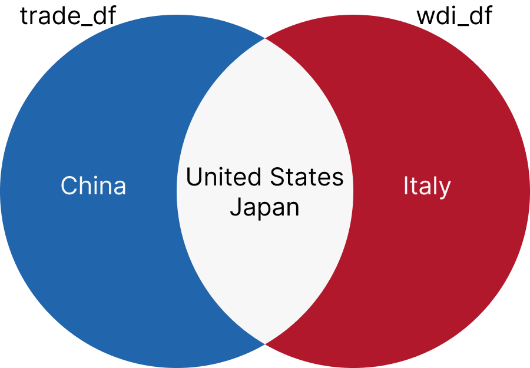
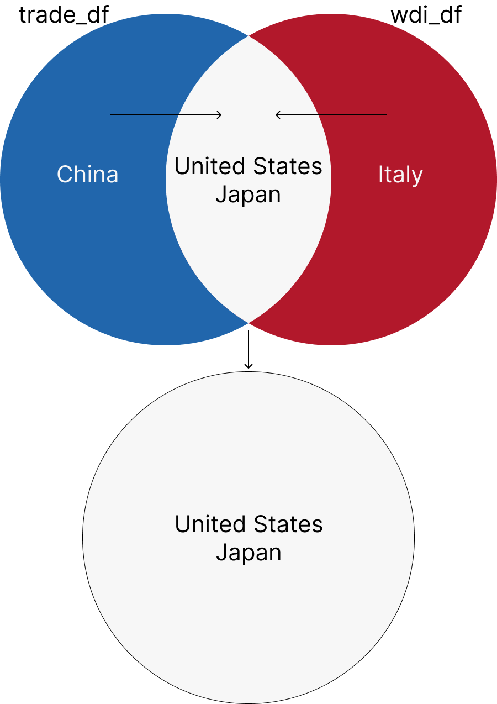
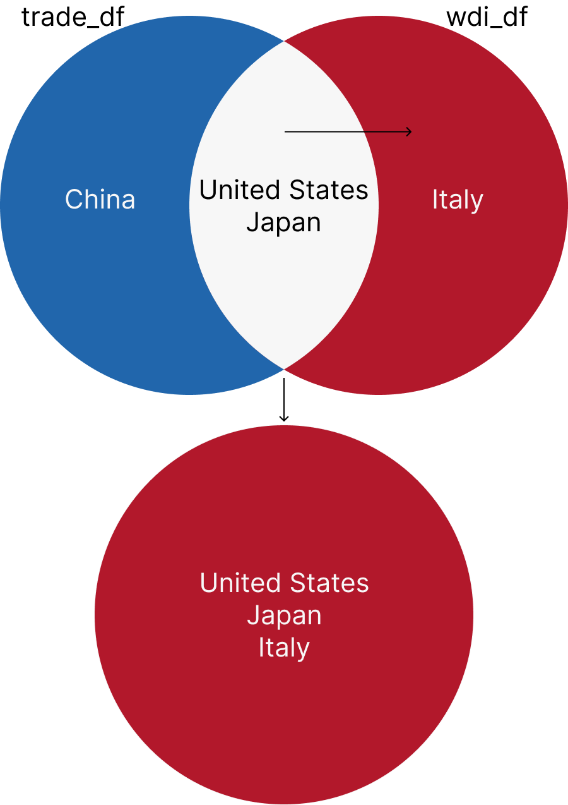
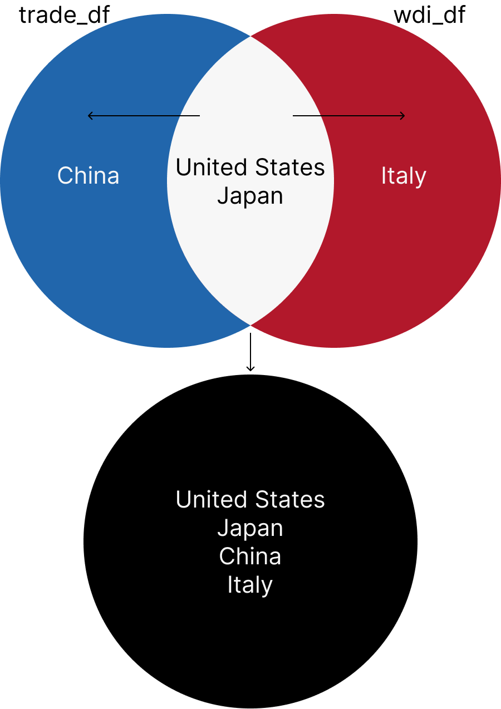
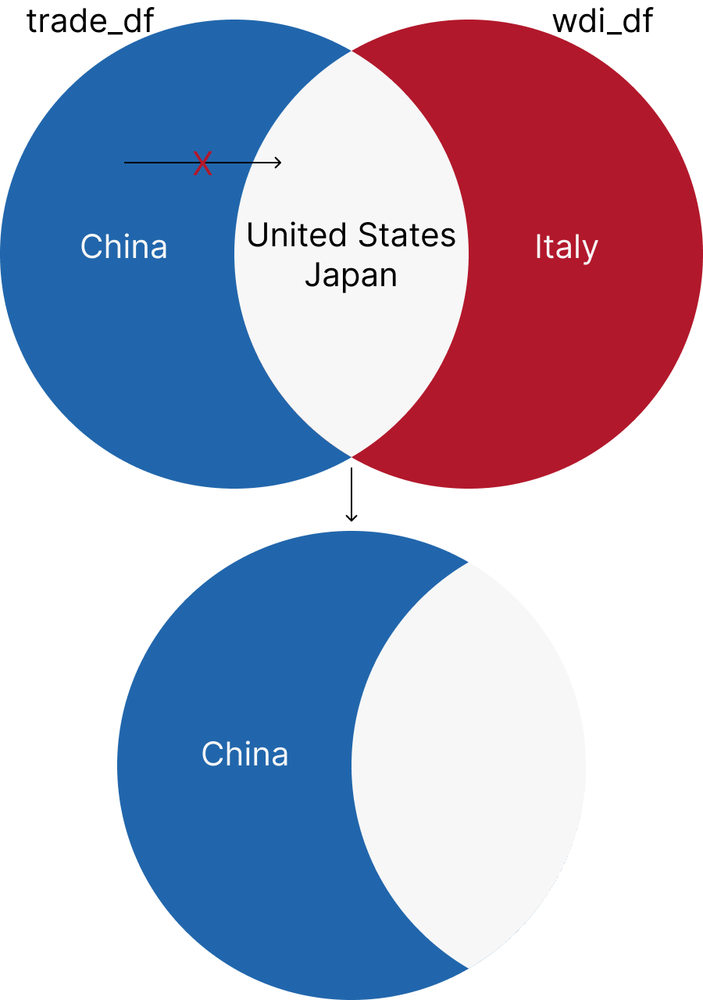

# install.packages("devtools") # if you haven't installed the devtools package yet, remove the # sign.
devtools::install_github("kjayhan/kdiplo")5 Data Wrangling
In this chapter, we will learn how to wrangle data mainly using the dplyr package. We will learn how to select, filter, arrange, mutate, group, and summarize data. We will learn how to join data from different sources, working with dates, and converting data to long and wide formats.
As an example for this chapter, we will use Korea’s trade data, trade_data, from the kdiplo package. Let’s install the package. You can install the development version from GitHub with:
Let’s load the libraries and the data.
Let’s take a quick look at the data.
head(trade_data)# A tibble: 6 × 18
iso3c country year export import total_export total_import export_kosis
<chr> <chr> <dbl> <dbl> <dbl> <dbl> <dbl> <dbl>
1 ABW Aruba 1965 NA NA 175082000 463442000 NA
2 ABW Aruba 1966 NA NA 250334000 716441000 NA
3 ABW Aruba 1967 NA NA 320229000 996246000 NA
4 ABW Aruba 1968 NA NA 455400000 1462873000 NA
5 ABW Aruba 1969 NA NA 622516000 1823611000 NA
6 ABW Aruba 1970 NA NA 835185000 1983973000 NA
# ℹ 10 more variables: import_kosis <dbl>, export_cow <dbl>, import_cow <dbl>,
# index <dbl>, cpi <dbl>, export_cons_2015 <dbl>, import_cons_2015 <dbl>,
# total_export_cons_2015 <dbl>, total_import_cons_2015 <dbl>,
# updated_at <date>We can read the data’s documentation using the ? function.
?trade_dataLet’s assign the data to a new object.
trade_data <- trade_data5.1 Selecting columns
We do not need all the columns in the data. We can select the columns we need using the select() function. For now, I will select only five columns: iso3c (country code), country (country name), year (year), export_kosis (Korea’s exports as reported by Korean Statistical Information Service (KOSIS)), and import_kosis (Korea’s exports as reported by KOSIS).
We can either assign the updated object with the selected columns to the same object or a new object. Here, I will assign the updated object to a new object.
trade <- trade_data |>
select(iso3c, country, year, export_kosis, import_kosis)Let’s see how many rows and columns trade_data and trade have.
nrow(trade_data) # number of rows in trade_data[1] 16511ncol(trade_data) # number of columns in trade_data[1] 18nrow(trade) # number of rows in trade[1] 16511ncol(trade) # number of columns in trade[1] 5trade_data has 16511 rows and 18 columns. trade has 16511 rows and 5 columns.
5.2 Filtering rows
We can filter rows based on a condition using the filter() function. Here, I will filter rows where the year is larger than 1964. Indeed, KOSIS data starts from 1965. This time, I will assign the updated object to the same object. We need a condition for filtering. In this case, the condition is year > 1964. It is the same as year >= 1965.
trade <- trade |>
filter(year > 1964)Let’s create a new object with the data from only 2019. == is the condition for equality. We need to use == instead of = for equality condition, and we need to be careful about it.
# A tibble: 6 × 5
iso3c country year export_kosis import_kosis
<chr> <chr> <dbl> <dbl> <dbl>
1 ABW Aruba 2019 10396000 1000
2 AFG Afghanistan 2019 49930000 38000
3 AGO Angola 2019 236830000 16733000
4 AIA Anguilla 2019 817000 1000
5 ALA Åland Islands 2019 NA 0
6 ALB Albania 2019 20744000 3357000Let’s create a new object with the data from only three countries: United States, China, and Japan. We need to use %in% as a condition for multiple values that we look for in the dataframe.
trade_us_china_japan <- trade |>
filter(country %in% c("United States", "China", "Japan"))
# let's see what the data looks like:
head(trade_us_china_japan)# A tibble: 6 × 5
iso3c country year export_kosis import_kosis
<chr> <chr> <dbl> <dbl> <dbl>
1 CHN China 1965 NA NA
2 CHN China 1966 NA NA
3 CHN China 1967 NA NA
4 CHN China 1968 NA NA
5 CHN China 1969 NA NA
6 CHN China 1970 NA NAWe can filter the rows for multiple years using the %in% operator as well. Let’s create a new object with the data from 2015, 2016, 2017, and 2018. : is used to create a sequence of numbers. 2015:2018 creates a sequence of numbers from 2015 to 2018.
We can also filter rows based on multiple conditions. Let’s create a new object with the data from 2015, 2016, 2017, and 2018 using the & operator, which means “and”.
trade_2015_2018_backup <- trade |>
filter(year >= 2015 # year is greater than or equal to 2015
& # and
year <= 2018 # year is less than or equal to 2018
)Let’s check if trade_2015_2018 and trade_2015_2018_backup are the same.
identical(trade_2015_2018, trade_2015_2018_backup)[1] TRUENow, let’s filter the data for 2015, 2016, 2017, and 2018 for the United States, China, and Japan, this time using country codes.
trade_us_china_japan_2015_2018 <- trade |>
filter(year %in% 2015:2018 # included years are 2015, 2016, 2017, and 2018
& # and
iso3c %in% c("USA", "CHN", "JPN") # included country codes are USA, CHN, and JPN
)
# let's see what the data looks like:
head(trade_us_china_japan_2015_2018)# A tibble: 6 × 5
iso3c country year export_kosis import_kosis
<chr> <chr> <dbl> <dbl> <dbl>
1 CHN China 2015 137123934000 90250275000
2 CHN China 2016 124432941000 86980135000
3 CHN China 2017 142120000000 97860114000
4 CHN China 2018 162125055000 106488592000
5 JPN Japan 2015 25576507000 45853834000
6 JPN Japan 2016 24355036000 47466592000Two other operators that we can use for filtering are | and !. | means “or” and ! means “not”. Let’s create a new object with the data for 2015, 2016, 2017, and 2018 or the export volume is larger than 100 billion USD.
Let’s see what else is included that is not in the years 2015, 2016, 2017, and 2018.
trade_2015_2018_or_export |>
filter(!year %in% 2015:2018) # excluded years are 2015, 2016, 2017, and 2018# A tibble: 11 × 5
iso3c country year export_kosis import_kosis
<chr> <chr> <dbl> <dbl> <dbl>
1 CHN China 2010 116837833000 71573603000
2 CHN China 2011 134185009000 86432238000
3 CHN China 2012 134322564000 80784595000
4 CHN China 2013 145869498000 83052877000
5 CHN China 2014 145287701000 90082226000
6 CHN China 2019 136202533000 107228736000
7 CHN China 2020 132565445000 108884645000
8 CHN China 2021 162912974000 138628127000
9 CHN China 2022 155789389000 154576314000
10 CHN China 2023 124817682000 142857338000
11 USA United States 2023 115696334000 712720300005.3 Arranging rows
We can arrange rows based on a column using the arrange() function. Let’s arrange the data by year in ascending order.
# A tibble: 6 × 5
iso3c country year export_kosis import_kosis
<chr> <chr> <dbl> <dbl> <dbl>
1 ABW Aruba 1965 NA NA
2 AFG Afghanistan 1965 NA NA
3 AGO Angola 1965 NA NA
4 AIA Anguilla 1965 NA NA
5 ALA Åland Islands 1965 NA NA
6 ALB Albania 1965 NA NAWe can arrange by year in descending order.
# A tibble: 6 × 5
iso3c country year export_kosis import_kosis
<chr> <chr> <dbl> <dbl> <dbl>
1 ABW Aruba 2023 21005000 121000
2 AFG Afghanistan 2023 25079000 1045000
3 AGO Angola 2023 474761000 11000
4 AIA Anguilla 2023 96000 10000
5 ALA Åland Islands 2023 15000 0
6 ALB Albania 2023 142311000 11053000We can arrange alphabetically by country codes in ascending order.
# A tibble: 6 × 5
iso3c country year export_kosis import_kosis
<chr> <chr> <dbl> <dbl> <dbl>
1 ABW Aruba 2023 21005000 121000
2 ABW Aruba 2022 24954000 15000
3 ABW Aruba 2021 11612000 93314000
4 ABW Aruba 2020 3070000 83864000
5 ABW Aruba 2019 10396000 1000
6 ABW Aruba 2018 14807000 29350005.4 Mutating columns
We can create new columns or update existing columns using the mutate() function. Let’s create a new column, trade_kosis, which is the total trade volume of Korea with a country in a year. The total trade volume is the sum of exports and imports.
# A tibble: 6 × 6
iso3c country year export_kosis import_kosis trade_kosis
<chr> <chr> <dbl> <dbl> <dbl> <dbl>
1 ABW Aruba 2023 21005000 121000 21126000
2 ABW Aruba 2022 24954000 15000 24969000
3 ABW Aruba 2021 11612000 93314000 104926000
4 ABW Aruba 2020 3070000 83864000 86934000
5 ABW Aruba 2019 10396000 1000 10397000
6 ABW Aruba 2018 14807000 2935000 177420005.5 Grouping and summarizing data
We can group data based on one or more columns using the group_by() function. We can summarize data based on the groups using the summarize() function. Let’s group the data by year and summarize the total trade volume of Korea in each year.
We need to be careful about one thing. There are missing values in the data. We need to ignore them (in other words treat them as zero) when we calculate the total trade volume. Otherwise, the total trade volume will be NA if there is at least one missing value in the data for a year. We can use the na.rm = TRUE argument in the sum() function to remove missing values.
trade_volume <- trade |>
group_by(year) |>
summarize(total_trade_kosis = sum(trade_kosis, na.rm = TRUE)) |>
arrange(desc(total_trade_kosis))
head(trade_volume)# A tibble: 6 × 2
year total_trade_kosis
<dbl> <dbl>
1 2022 1400216998000
2 2023 1270073156000
3 2021 1248778081000
4 2018 1127928070000
5 2014 1092728073000
6 2011 1077938860000We can also group the data by country. Let’s summarize the total trade volume of Korea with each country since 1965.
trade_country <- trade |>
group_by(country) |>
summarize(total_trade_kosis = sum(trade_kosis, na.rm = TRUE)) |>
arrange(desc(total_trade_kosis))
head(trade_country)# A tibble: 6 × 2
country total_trade_kosis
<chr> <dbl>
1 China 4455699092000
2 United States 3179689314000
3 Japan 2424243884000
4 Vietnam 773845848000
5 Hong Kong SAR China 759431632000
6 Saudi Arabia 7537119410005.6 Conditional Mutating
We can conditionally mutate columns using the case_when() function. Let’s create a new column, trade_status, which is “surplus” if the export volume is larger than the import volume, “deficit” if the import volume is larger than the export volume, and “balanced” if the export volume is equal to the import volume. If the export or import volume is missing, we will make the trade status “unknown”. We can use is.na() to check if a value is missing.
trade <- trade |>
mutate(trade_status = case_when(
export_kosis > import_kosis ~ "surplus", # export volume is larger than import volume
export_kosis < import_kosis ~ "deficit", # export volume is less than import volume
export_kosis == import_kosis ~ "balanced", # export volume is equal to import volume
is.na(export_kosis) | is.na(import_kosis) ~ "unknown", # export or import volume is missing
TRUE ~ "everything else" # in this instance, we do not need "TRUE ~" since we cover all `case_when()` options above. But in other cases, you may need it. "TRUE ~" basically helps you assign a new value for every other condition that is not mentioned above.
))
head(trade)# A tibble: 6 × 7
iso3c country year export_kosis import_kosis trade_kosis trade_status
<chr> <chr> <dbl> <dbl> <dbl> <dbl> <chr>
1 ABW Aruba 2023 21005000 121000 21126000 surplus
2 ABW Aruba 2022 24954000 15000 24969000 surplus
3 ABW Aruba 2021 11612000 93314000 104926000 deficit
4 ABW Aruba 2020 3070000 83864000 86934000 deficit
5 ABW Aruba 2019 10396000 1000 10397000 surplus
6 ABW Aruba 2018 14807000 2935000 17742000 surplus In this instance, we do not need “TRUE ~” since we cover all case_when() options above. But in other cases, you may need it. “TRUE ~” basically helps you assign a new value for every other condition that is not mentioned above.
We can create a table using the table() function for the trade status of Korea since 1965.
table(trade$trade_status)
balanced deficit surplus unknown
143 3134 6567 5444 5.7 Merging datasets
Right now, we only have one dataset. Let’s get another dataset from the WDI package, which includes World Bank’s World Development Indicators data. Let’s install the package if you do not have it yet.
Let’s get the data for the GDP of all countries since 1965. You can search for indicators from the World Bank’s World Development Indicators database here or using the WDIsearch function in the WDI package. For details, you can check out WDI’s documentation using the ? function or its Github page.
wdi <- WDI(country = "all", # all countries
indicator = c("gdp" = "NY.GDP.MKTP.KD", # GDP at constant 2015 US dollars
"gdp_pc" = "NY.GDP.PCAP.KD"), # GDP per capita at constant 2015 US dollars
start = 1965, # start year
end = 2024, # end year
extra = TRUE, # include extra columns included in the WDI package defaults
language = "en" # language is English
)
head(wdi) country iso2c iso3c year status lastupdated gdp gdp_pc
1 Afghanistan AF AFG 1965 2024-09-19 NA NA
2 Afghanistan AF AFG 2003 2024-09-19 7867263256 347.4152
3 Afghanistan AF AFG 1966 2024-09-19 NA NA
4 Afghanistan AF AFG 2005 2024-09-19 8874480196 363.5415
5 Afghanistan AF AFG 1971 2024-09-19 NA NA
6 Afghanistan AF AFG 2002 2024-09-19 7228795919 344.2242
region capital longitude latitude income lending
1 South Asia Kabul 69.1761 34.5228 Low income IDA
2 South Asia Kabul 69.1761 34.5228 Low income IDA
3 South Asia Kabul 69.1761 34.5228 Low income IDA
4 South Asia Kabul 69.1761 34.5228 Low income IDA
5 South Asia Kabul 69.1761 34.5228 Low income IDA
6 South Asia Kabul 69.1761 34.5228 Low income IDAWe wanted extra WDI data, but we don’t need all. Let’s select the ones we need. This time, let’s exclude the columns we do not need by using the - sign. Then let’s exclude non-country groups (e.g., “High income”, “Not classified”) by filtering out rows where the iso3c column is missing. Then let’s arrange the data by country code and year.
wdi <- wdi |>
#select(-iso2c, -status, -lastupdated, -capital, -lending, -longitude, -latitude) |> # exclude these columns
filter(!is.na(iso3c)) |> # exclude the rows that are missing country codes (in other words, we only include the ones that are not (!) missing country codes (iso3c))
arrange(iso3c, year) # arrange the data by country code and year
head(wdi) country iso2c iso3c year status lastupdated gdp
1 High income XD 1965 2024-09-19 1.214382e+13
2 Low income XM 1965 2024-09-19 NA
3 Lower middle income XN 1965 2024-09-19 5.474380e+11
4 Not classified XY 1965 2024-09-19 NA
5 Upper middle income XT 1965 2024-09-19 1.481616e+12
6 High income XD 1966 2024-09-19 1.281436e+13
gdp_pc region capital longitude latitude income lending
1 12593.9054 <NA> <NA> <NA> <NA> <NA> <NA>
2 NA <NA> <NA> <NA> <NA> <NA> <NA>
3 584.5733 <NA> <NA> <NA> <NA> <NA> <NA>
4 NA <NA> <NA> <NA> <NA> <NA> <NA>
5 1171.4299 <NA> <NA> <NA> <NA> <NA> <NA>
6 13154.2957 <NA> <NA> <NA> <NA> <NA> <NA>This did not work out. Probably these entries are not missing, but instead simply empty! Let’s check that. Let’s try filtering out empty country codes (instead of missing country codes which we checked with is.na()).
wdi <- wdi |>
filter(iso3c != "") # exclude the rows that have empty country codes. We check it as an empty character. "!=" means not equal to.
head(wdi) country iso2c iso3c year status lastupdated gdp gdp_pc
1 Aruba AW ABW 1965 2024-09-19 NA NA
2 Aruba AW ABW 1966 2024-09-19 NA NA
3 Aruba AW ABW 1967 2024-09-19 NA NA
4 Aruba AW ABW 1968 2024-09-19 NA NA
5 Aruba AW ABW 1969 2024-09-19 NA NA
6 Aruba AW ABW 1970 2024-09-19 NA NA
region capital longitude latitude income
1 Latin America & Caribbean Oranjestad -70.0167 12.5167 High income
2 Latin America & Caribbean Oranjestad -70.0167 12.5167 High income
3 Latin America & Caribbean Oranjestad -70.0167 12.5167 High income
4 Latin America & Caribbean Oranjestad -70.0167 12.5167 High income
5 Latin America & Caribbean Oranjestad -70.0167 12.5167 High income
6 Latin America & Caribbean Oranjestad -70.0167 12.5167 High income
lending
1 Not classified
2 Not classified
3 Not classified
4 Not classified
5 Not classified
6 Not classifiedYes, that was it. Instead of NA, those country code columns were empty for those rows. Now that we successfully filtered out the rows with empty country codes, let’s join Korea’s trade data with the WDI data. There are different types of joins. I will explain five of them. To make things easier, I will create smaller datasets for the demonstration. We will have only the data for the United States, China, and Japan in the trade data. We will have only the data for the United States, Japan and Italy in the WDI data.
# A tibble: 6 × 7
iso3c country year export_kosis import_kosis trade_kosis trade_status
<chr> <chr> <dbl> <dbl> <dbl> <dbl> <chr>
1 CHN China 2023 124817682000 142857338000 267675020000 deficit
2 CHN China 2022 155789389000 154576314000 310365703000 surplus
3 CHN China 2021 162912974000 138628127000 301541101000 surplus
4 CHN China 2020 132565445000 108884645000 241450090000 surplus
5 CHN China 2019 136202533000 107228736000 243431269000 surplus
6 CHN China 2018 162125055000 106488592000 268613647000 surplus 
5.7.1 inner_join
inner_join returns only the rows that have matching values in both datasets. Let’s join the trade_df and wdi_df datasets using the iso3c and year columns.
inner_df <- inner_join(trade_df, wdi_df, by = c("iso3c", "year"))
# you can also write it like this:
# inner_df <- trade_df |> inner_join(wdi_df, by = c("iso3c", "year"), suffix = c("_trade", "_wdi"))
head(inner_df)# A tibble: 6 × 19
iso3c country.x year export_kosis import_kosis trade_kosis trade_status
<chr> <chr> <dbl> <dbl> <dbl> <dbl> <chr>
1 JPN Japan 2023 29000616000 47656468000 76657084000 deficit
2 JPN Japan 2022 30606278000 54711795000 85318073000 deficit
3 JPN Japan 2021 30061806000 54642165000 84703971000 deficit
4 JPN Japan 2020 25097651000 46023036000 71120687000 deficit
5 JPN Japan 2019 28420213000 47580853000 76001066000 deficit
6 JPN Japan 2018 30528580000 54603749000 85132329000 deficit
# ℹ 12 more variables: country.y <chr>, iso2c <chr>, status <chr>,
# lastupdated <chr>, gdp <dbl>, gdp_pc <dbl>, region <chr>, capital <chr>,
# longitude <chr>, latitude <chr>, income <chr>, lending <chr>
The column names that we will join by are the same in both dataframes (“iso3c” and “year”). If it was not the same, we could write the code as follows:
inner_df <- inner_join(trade_df, wdi_df, by = c("iso3c" = "iso3c", "year" = "year")) # the first element is from the first dataframe and the second element is from the second dataframe.If, for example, the country code column name was “country_code” and the year column was “Year” in trade_df, you would replace the first “iso3c” with “country_code” and the first “year” with “Year”.
If there are columns with the same name in both dataframes other than the columns you use to join them, you can use the suffix argument to add a suffix to the column names. For example, in this case, we have columns named “country” in both dataframes. Since we didn’t have suffix in the above code, we have two columns “country.x” and “country.y”. If you want to add suffices, you can do it as follows:
inner_df <- inner_join(trade_df, wdi_df, by = c("iso3c", "year"), suffix = c("_trade", "_wdi"))
head(inner_df)# A tibble: 6 × 19
iso3c country_trade year export_kosis import_kosis trade_kosis trade_status
<chr> <chr> <dbl> <dbl> <dbl> <dbl> <chr>
1 JPN Japan 2023 29000616000 47656468000 76657084000 deficit
2 JPN Japan 2022 30606278000 54711795000 85318073000 deficit
3 JPN Japan 2021 30061806000 54642165000 84703971000 deficit
4 JPN Japan 2020 25097651000 46023036000 71120687000 deficit
5 JPN Japan 2019 28420213000 47580853000 76001066000 deficit
6 JPN Japan 2018 30528580000 54603749000 85132329000 deficit
# ℹ 12 more variables: country_wdi <chr>, iso2c <chr>, status <chr>,
# lastupdated <chr>, gdp <dbl>, gdp_pc <dbl>, region <chr>, capital <chr>,
# longitude <chr>, latitude <chr>, income <chr>, lending <chr>5.7.2 left_join
left_join returns all the rows from the left dataset and the matched rows from the right dataset. If there is no match, the result is NA. Let’s join the trade_df and wdi_df datasets using the iso3c and year columns.

# A tibble: 6 × 19
iso3c country.x year export_kosis import_kosis trade_kosis trade_status
<chr> <chr> <dbl> <dbl> <dbl> <dbl> <chr>
1 CHN China 2023 124817682000 142857338000 267675020000 deficit
2 CHN China 2022 155789389000 154576314000 310365703000 surplus
3 CHN China 2021 162912974000 138628127000 301541101000 surplus
4 CHN China 2020 132565445000 108884645000 241450090000 surplus
5 CHN China 2019 136202533000 107228736000 243431269000 surplus
6 CHN China 2018 162125055000 106488592000 268613647000 surplus
# ℹ 12 more variables: country.y <chr>, iso2c <chr>, status <chr>,
# lastupdated <chr>, gdp <dbl>, gdp_pc <dbl>, region <chr>, capital <chr>,
# longitude <chr>, latitude <chr>, income <chr>, lending <chr>5.7.3 right_join
right_join returns all the rows from the right dataset and the matched rows from the left dataset. If there is no match, the result is NA. Let’s join the trade_df and wdi_df datasets using the iso3c and year columns.

right_df <- right_join(trade_df, wdi_df, by = c("iso3c", "year"), suffix = c("_trade", "_wdi"))
head(right_df)# A tibble: 6 × 19
iso3c country_trade year export_kosis import_kosis trade_kosis trade_status
<chr> <chr> <dbl> <dbl> <dbl> <dbl> <chr>
1 JPN Japan 2023 29000616000 47656468000 76657084000 deficit
2 JPN Japan 2022 30606278000 54711795000 85318073000 deficit
3 JPN Japan 2021 30061806000 54642165000 84703971000 deficit
4 JPN Japan 2020 25097651000 46023036000 71120687000 deficit
5 JPN Japan 2019 28420213000 47580853000 76001066000 deficit
6 JPN Japan 2018 30528580000 54603749000 85132329000 deficit
# ℹ 12 more variables: country_wdi <chr>, iso2c <chr>, status <chr>,
# lastupdated <chr>, gdp <dbl>, gdp_pc <dbl>, region <chr>, capital <chr>,
# longitude <chr>, latitude <chr>, income <chr>, lending <chr>5.7.4 full_join
full_join returns all the rows from both datasets. If there is no match, the result is NA. Let’s join the trade_df and wdi_df datasets using the iso3c and year columns.

full_df <- full_join(trade_df, wdi_df, by = c("iso3c", "year"), suffix = c("_trade", "_wdi"))
head(full_df)# A tibble: 6 × 19
iso3c country_trade year export_kosis import_kosis trade_kosis trade_status
<chr> <chr> <dbl> <dbl> <dbl> <dbl> <chr>
1 CHN China 2023 124817682000 142857338000 267675020000 deficit
2 CHN China 2022 155789389000 154576314000 310365703000 surplus
3 CHN China 2021 162912974000 138628127000 301541101000 surplus
4 CHN China 2020 132565445000 108884645000 241450090000 surplus
5 CHN China 2019 136202533000 107228736000 243431269000 surplus
6 CHN China 2018 162125055000 106488592000 268613647000 surplus
# ℹ 12 more variables: country_wdi <chr>, iso2c <chr>, status <chr>,
# lastupdated <chr>, gdp <dbl>, gdp_pc <dbl>, region <chr>, capital <chr>,
# longitude <chr>, latitude <chr>, income <chr>, lending <chr>5.7.5 anti_join
anti_join returns all the rows from the left dataset that do not have a match in the right dataset. Let’s join the trade_df and wdi_df datasets using the iso3c and year columns.

# A tibble: 6 × 7
iso3c country year export_kosis import_kosis trade_kosis trade_status
<chr> <chr> <dbl> <dbl> <dbl> <dbl> <chr>
1 CHN China 2023 124817682000 142857338000 267675020000 deficit
2 CHN China 2022 155789389000 154576314000 310365703000 surplus
3 CHN China 2021 162912974000 138628127000 301541101000 surplus
4 CHN China 2020 132565445000 108884645000 241450090000 surplus
5 CHN China 2019 136202533000 107228736000 243431269000 surplus
6 CHN China 2018 162125055000 106488592000 268613647000 surplus 5.8 A Note on Country Codes
It is often easier to work with standard country codes than country names when we work with multiple datasets. There are a few widely used standard country codes. Above, we used the ISO 3166-1 alpha-3 country codes. There are other commonly used country codes such as Correlates of War (COW) country codes, Varieties of Democracy (V-Dem) country codes, and more.
We can convert country names to country codes using the countrycode package. Let’s install the package if you do not have it yet.
# install.packages("countrycode") # if you haven't installed the countrycode package yet, remove the # sign.
library(countrycode) # load the countrycode packageLet’s convert the country names in the trade_df dataset to Correlates of War country codes. You can find the countrycode documentantion on its Github page or by using the ? function.
# ?countrycode
trade_df <- trade_df |>
mutate(cown = countrycode(country, origin = "country.name", destination = "cown")) # convert country names to Correlates of War numeric country codes (cown)5.9 A Note on Working with Korean Country Names1
In my research, I often work with country-year data from Korean sources, including data on diplomatic visits, trade, aid and so on. One of the fundamental difficulties I have had is the lack of universal country codes across different datasets. Further complicating matters is the inconsistency of country names in these datasets. For example, Democratic Republic of the Congo has five different spellings across different official sources that I could find: 콩고 민주공화국, 자이르, 콩고민주공화국, 콩고 민주 공화국, 콩고민주공화국(DR콩고).
To address this issue, I have created a function in my kdiplo package that converts Korean country names into ISO 3166-1 alpha-3 (iso3c) country codes. This function, iso3c_kr, is designed to assign universal iso3c country codes to Korean-language country names that will make it easier to join different kinds of data.
One still needs to check if the output is correct, especially for countries that have gone through political transitions such as Germany, Yugoslavia, Russia, Vietnam, Yemen and so on.
Sometimes the Korean government sources have overlapping data for Yugoslavia and Serbia, for example. In such cases, one needs to check the data and make sure that the data is correct.
For example, the following is sample Korean trade data from Korean Statistical Information Service (KOSIS):
# install.packages("readxl") # if you haven't installed the readxl package yet, remove the # sign.
library(readxl) # load the readxl package
# let's read the xlsx data
kosis_trade <- read_xlsx("data/kosis_trade_240330.xlsx")
# let's take a look at the data
# install.packages("gt") # if you haven't installed the gt package yet, remove the # sign.
# let's take a look at some of the data
# remember, [row, column] format can be used in R for subsetting dataframes. So, we can look at rows 533 to 538 and columns 1 and 57 to 62.
kosis_trade[533:538,c(1,57:62)] |> gt::gt() | 국가별 | 2018 년 | 2019 년 | 2020 년 | 2021 년 | 2022 년 | 2023 년 |
|---|---|---|---|---|---|---|
| 잠비아 | 26241 | 16087 | 17619 | 28356 | 14068 | 15459 |
| 잠비아 | 108344 | 54542 | 15164 | 100606 | 82198 | 53867 |
| 자이르 | NA | NA | NA | NA | NA | NA |
| 자이르 | 618 | 8 | 113 | 4 | NA | NA |
| 짐바브웨 | 25964 | 14088 | 15514 | 20404 | 16083 | 19563 |
| 짐바브웨 | 4909 | 13098 | 11377 | 9627 | 10415 | 20862 |
# you can use the gt package to create a table.
# you can use "::" to access the functions in the package without loading the package.And, the following is sample Korean aid data from Korea’s ODA portal:
aid <- read_xlsx("data/korea_total_aid_2019_230709.xlsx")
aid <- aid |> select(1:5) # we only need the first five columns
aid <- aid |> set_names(c("country_kr", "sector", "no_of_projects", "aid_usd", "aid_krw"))
# This sample data is only 2019; so we will add the year column, and assign 2019 to all rows.
aid$year <- 2019
# let's take a look at some of the data
aid[c(50, 150, 250, 350, 450),] |> gt::gt()| country_kr | sector | no_of_projects | aid_usd | aid_krw | year |
|---|---|---|---|---|---|
| 베트남 | 통신정책, 계획 및 행정(voluntary code) | 2 | 232334 | 270736486 | 2019 |
| 캄보디아 | 11321 | 1 | 85815 | 99999361 | 2019 |
| 미얀마 | 사회보호/보장 | 1 | 103460 | 120560903 | 2019 |
| 라오스 | 비정규 농업훈련 | 1 | 107958 | 125802378 | 2019 |
| 몽골 | 의료서비스 | 5 | 511824 | 596423389 | 2019 |
5.9.1 Converting wide data to long format
Wide format is quite common in official Korean data sources. Trade data is in wide format. Before using the iso3c_kr function, let’s first transform the trade data into a long (country-year) format to make it in the same format as the aid data. This will make joining the two datasets more feasible.
To convert the trade data into a long format, we will use the pivot_longer() function from the tidyr package.
# we will divide the trade data into export and import data
export <- kosis_trade
import <- kosis_tradeIn pivot_longer(), we need to specify the columns that we want to pivot. In this case, we want to pivot columns 4 to 62, which are years. We also need to specify the names of the columns that will be created. In this case, we will create a column called year and a column called export_kosis for the export data. We will create a column called year and a column called import_kosis for the import data.
export_long <- export |>
pivot_longer(4:62, names_to = "year", values_to = "export_kosis") # we will pivot the data from wide to long formatWe can rename the columns using set_names function in rlang package, which is also a member of the tidyverse family, to make them more informative.
We can filter the data for only export data using the filter() function. We can also convert the export data from thousands of dollars to dollars by multiplying the export_kosis column by 1000. We can also convert the year column to numeric using the parse_number() function from the readr package, which is also a member of the tidyverse family.
export_long <- export_long |>
filter(type == "수출액[천달러]") |> # we only need the export data which has the column name in Korean as "수출액[천달러]"
mutate(export_kosis = parse_number(export_kosis) * 1000, # we convert the export data from thousands of dollars to dollars; sometimes there are commas that make the data character instead of numeric. So we use parse_number() function from the readr package to convert character to numeric data.
year = parse_number(year)) |> # we convert the year column to numeric using parse_number() function from the readr package
select(-type, -unit) # we do not need the type and unit columnsWe repeat the same steps for the import data.
import_long <- import |>
pivot_longer(4:62, names_to = "year", values_to = "import_kosis")
import_long <- import_long |>
set_names(c("country_kr", "type", "unit", "year", "import_kosis"))
import_long <- import_long |>
filter(type == "수입액[천달러]") |>
mutate(import_kosis = parse_number(import_kosis) * 1000,
year = parse_number(year)) |>
select(-type, -unit)Now, we can join the export and import data using the left_join() function.
Here, we get a warning message that there are rows that have the same country name and year in both the export and import data. It is because, KOSIS reported trade with Palestine in two separate entries (probably, West Bank and Gaza are recorded separately), but assigning both the same name “팔레스타인 해방기구”. We will ignore this warning for now.
5.9.2 iso3c_kr function to convert Korean country names to iso3c country codes
Using the iso3c_kr function, we can simply convert Korean country names into iso3c country codes. For example, the following is the output of the iso3c_kr function for the Korean trade data:
trade_long <- iso3c_kr(trade_long, "country_kr") #you copy paste the column name that has the Korean country names.
trade_long[c(50, 150, 250, 350, 450, 550), c(1,5, 2:4)] |> gt::gt()| country_kr | iso3c | year | export_kosis | import_kosis |
|---|---|---|---|---|
| 계 | NA | 2014 | 572664607000 | 525514506000 |
| 아랍에미리트 연합 | ARE | 1996 | 1377933000 | 2259205000 |
| 앤티가바부다 | ATG | 1978 | NA | NA |
| 앵귈라 | AIA | 2019 | 817000 | 1000 |
| 아르메니아 | ARM | 2001 | 1255000 | 43000 |
| 앙골라 | AGO | 1983 | 235000 | NA |
We see that in this example, “계” (gyae) did not get any iso3c country code. This is because the iso3c_kr function could not find the iso3c country code for this entry. This is because, it is not a country name. “계” means total. It is best to check the data to see which entries did not get an iso3c code.
missing_iso3c <- trade_long |>
filter(is.na(iso3c)) |> # we only need the rows that do not have iso3c country codes
pull(country_kr) |> # pull() function is used to extract a column as a vector
unique() # we need each Korean country name only once to see which ones are missing rather than having it for all years.
missing_iso3c[1] "계" "국제통화기금" "기타" "기타국" They mean “total”, “IMF”, “other”, and “other countries” in Korean. In other words, we are not missing any countries, which is good.
Now let’s convert the Korean country names in the aid data into iso3c country codes:
aid <- iso3c_kr(aid, "country_kr") #you copy paste the column name that has the Korean country names.
aid[c(50, 150, 250, 350, 450, 550),c(1, 6, 2:5)] |> gt::gt()| country_kr | year | sector | no_of_projects | aid_usd | aid_krw |
|---|---|---|---|---|---|
| 베트남 | 2019 | 통신정책, 계획 및 행정(voluntary code) | 2 | 232334 | 270736486 |
| 캄보디아 | 2019 | 11321 | 1 | 85815 | 99999361 |
| 미얀마 | 2019 | 사회보호/보장 | 1 | 103460 | 120560903 |
| 라오스 | 2019 | 비정규 농업훈련 | 1 | 107958 | 125802378 |
| 몽골 | 2019 | 의료서비스 | 5 | 511824 | 596423389 |
| 필리핀 | 2019 | 농업용수자원 | 2 | 0 | 0 |
Once you know the iso3c country codes, you can get the English country names, or other country codes (such as Correlates of War country codes) using the countrycode package, for example.
trade_long <- trade_long |>
mutate(country_name = countrycode::countrycode(iso3c, origin = "iso3c", destination = "country.name"))
trade_long[c(50, 150, 250, 350, 450, 550),c(1, 5, 6, 2:4)] |> gt::gt()| country_kr | iso3c | country_name | year | export_kosis | import_kosis |
|---|---|---|---|---|---|
| 계 | NA | NA | 2014 | 572664607000 | 525514506000 |
| 아랍에미리트 연합 | ARE | United Arab Emirates | 1996 | 1377933000 | 2259205000 |
| 앤티가바부다 | ATG | Antigua & Barbuda | 1978 | NA | NA |
| 앵귈라 | AIA | Anguilla | 2019 | 817000 | 1000 |
| 아르메니아 | ARM | Armenia | 2001 | 1255000 | 43000 |
| 앙골라 | AGO | Angola | 1983 | 235000 | NA |
More importantly, iso3c_kr function allows users to be able to join different datasets that have Korean country names. For example, one can join the trade data with the aid data using the iso3c country codes. In this example, I will join the trade data with the aid data using the iso3c country codes.
trade_aid <- trade_long |>
left_join(aid, by = c("iso3c", "year"), suffix = c("_trade", "_aid"))
trade_aid |>
filter(year == 2019 & !is.na(iso3c)) |> # just as a sample, we only need the data for 2019 and we exclude the rows that do not have iso3c country codes
slice(c(30, 130, 230, 330, 430, 530)) |> # just as a sample, let's only look at the rows 30, 130, 230, 330, 430, and 530
select(c(iso3c, country_kr_trade, country_kr_aid, year, export_kosis, import_kosis, aid_usd)) |> # just as a sample, let's only look at the columns that we are interested in
gt::gt()| iso3c | country_kr_trade | country_kr_aid | year | export_kosis | import_kosis | aid_usd |
|---|---|---|---|---|---|---|
| AFG | 아프가니스탄 | 아프가니스탄 | 2019 | 49930000 | 38000 | 6081 |
| BGD | 방글라데시 | 방글라데시 | 2019 | 1282342000 | 404703000 | 746593 |
| BOL | 볼리비아 | 볼리비아 | 2019 | 30434000 | 450576000 | 535262 |
| COD | 콩고 민주공화국 | 콩고민주공화국(DR콩고) | 2019 | 37083000 | 411274000 | 0 |
| CHN | 중국 | 중국 | 2019 | 136202533000 | 107228736000 | 0 |
| DOM | 도미니카 공화국 | 도미니카공화국 | 2019 | 252420000 | 88516000 | 25792 |
Voilà! Now we have a dataset that has both trade and aid data, both of which originally did not have consistent country names or country codes. If we only used country_kr column to join the two datasets, we would have failed to merge all the data, such as “콩고 민주공화국” and “콩고민주공화국(DR콩고)”, both of which are Democratic Republic of the Congo; or “도미니카 공화국” and “도미니카공화국” (Dominican Republic) which merelt have a space difference between the words. But with the iso3c_kr function, we were able to merge the two datasets successfully.
5.10 Working with dates
To be added
5.11 Regular expressions
To be added